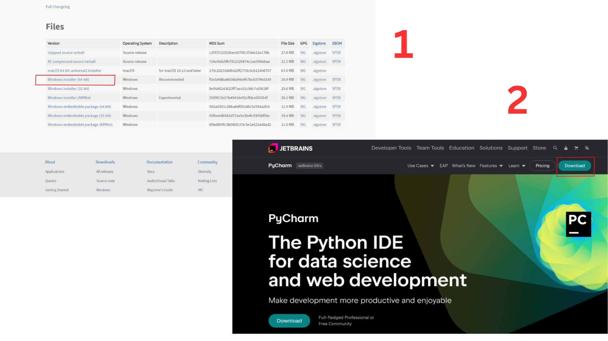
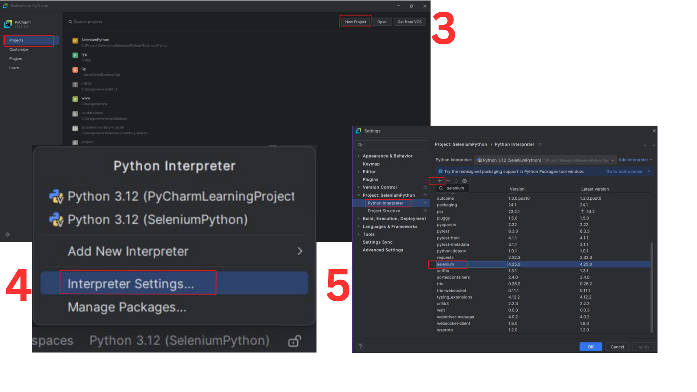
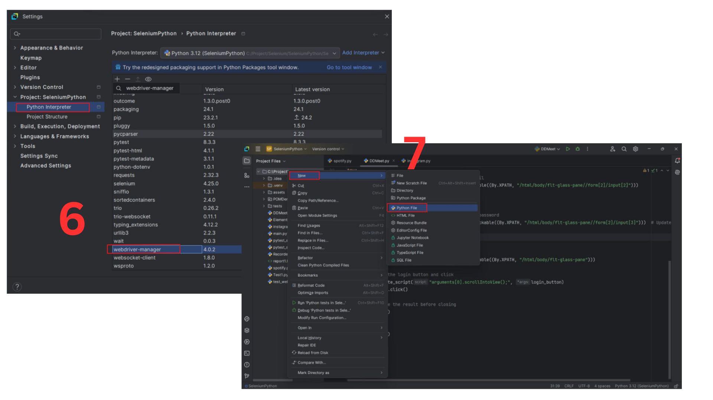

Installation Instruction
This section provides step-by-step installation instructions for both Apache JMeter and Selenium. Proper installation is crucial to ensure that you can effectively use these tools for your testing needs. Follow the outlined procedures to set up JMeter and Selenium on your system.
JMeter
- Step 1 - Download Java Development Kit (JDK).
Go to the official Oracle JDK website.
Choose the appropriate version for your operating system and install it.
After installation, verify the JDK version by running java -version in your command prompt or terminal.
- Step 2 - Download Apache JMeter:
Visit the official Apache JMeter website.
Scroll down to the “Binaries” section and download the latest version of JMeter for your operating system.
Extract the downloaded .zip or .tgz file to a desired location on your machine.
- Step 3 - Set Up Environment Variables (Windows only):
Open Control Panel > System > Advanced System Settings > Environment Variables.
Under “System variables,” click New and add JAVA_HOME with the path to your JDK installation folder.
Add JMeter’s bin folder to the system’s PATH variable by editing the Path variable and appending ;C:path-to-your-jmeter-folderbin.
- Step 4 - JMeter Installation:
Open the folder where you stored the downloaded JMeter zip file.
Extract the contents of the zip file.
Navigate to the bin folder within the extracted JMeter folder.
Click on the ApacheJMeter.jar file.
JMeter will launch the graphical user interface (GUI).
If the JMeter GUI opens successfully, the installation is complete.
Selenium
- Step 1 - Install Python:
Download Python from https://www.python.org and click ‘Windows installer’ if using OS Windows.
- Step 2 - Install Pycharm:
Go to https://www.jetbrains.com/pycharm and click ‘Download’.
- Step 3 - Create New Project:
Open Pycharm > File > create new project.
- Step 4 - Add Selenium:
Pycharm : File > Settings (“Interpreter setting” on windows) > Project > Python interpreter.
- Step 5 - Add package:
Click ‘+’ to add new package . Install selenium and webdriver _manager.
- Step 6 - Create 1st Test:
Right click on the project folder and select New > Python file.
 
Step 7 - Add code for selenium test.
import time
from selenium import webdriver
from selenium.webdriver.chrome.service import Service as ChromeService
from webdriver_manager.chrome import ChromeDriverManager
driver = webdriver.Chrome(service=ChromeService(ChromeDriverManager().install())
time.sleep(2)
driver.close()
driver.quit()